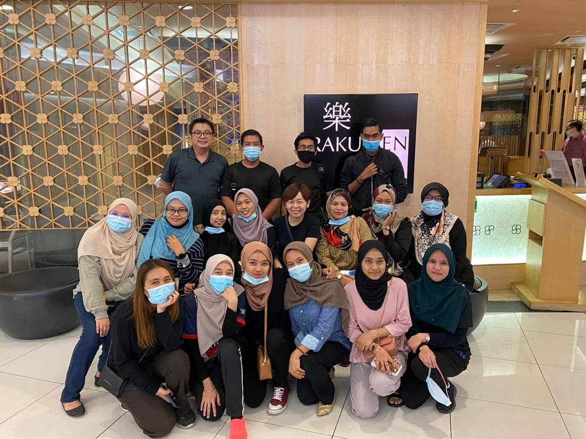

Hello people. As for this section, I want to share about my working experience. So, while waiting for my SPM result in 2019, I became a part-time worker at Whisk Ingredients Supply at Seksyen 9. I have to came at work at 8:45 a.m. to do some cleaning in the outlet before we do the opening which is mopping, sweeping and then we have to get ready with the opening. After that, the store will close at 7:00 p.m., but none of the staff will be able to go home until the end of the day, because they must count the profit and losses. As a result, other employees must wait until they have completed their count. Generally, the Whisk outlet is a supplier of bakery ingredients such as cake flour, cooking chocolate, lunch boxes, cookie jars, and a variety of other items. On the first day of my part-time job, one of the employees assists me by introducing all of the tasks that we must complete, as well as our lunch hour and working procedures. They asked me to pack several cartons of chocolate chips into a 1kg bag, 500g bag, 250g bag, and 100g bag for my first job. They all understand my poor packing technique while packing the chocolate chips because it is my first time doing that job. So, the employee teaches me how to pack the chocolate chips as quickly as possible, because they informed me that we needed to finish our work faster so that we could go on to other tasks. I just had to complete two tasks on my first day, but they told me that this was standard procedure for new employees. After a few months, I've become an expert at completing all of the tasks handed to me.

Our managers will take all of their employees from each outlet out to dinner at the end of every month. At the dinner, everyone can order what they want to eat, and while they wait for their order, everyone, including our managers, will converse. They may sometimes share their thoughts on how to enhance the way they promote the outlet and other things. After we've finished eating, our managers will give a speech in which they will thank and advise everyone about our jobs. Just after that session, everyone would have gathered to capture some photos as a memory. Sometimes, during the month that has a special celebration such as Hari Raya Aidilfitri, and Chinese New Year, our managers will give their employees "Angpau" and "Duit Raya" as our bonus for our hard work and our persistence every day.